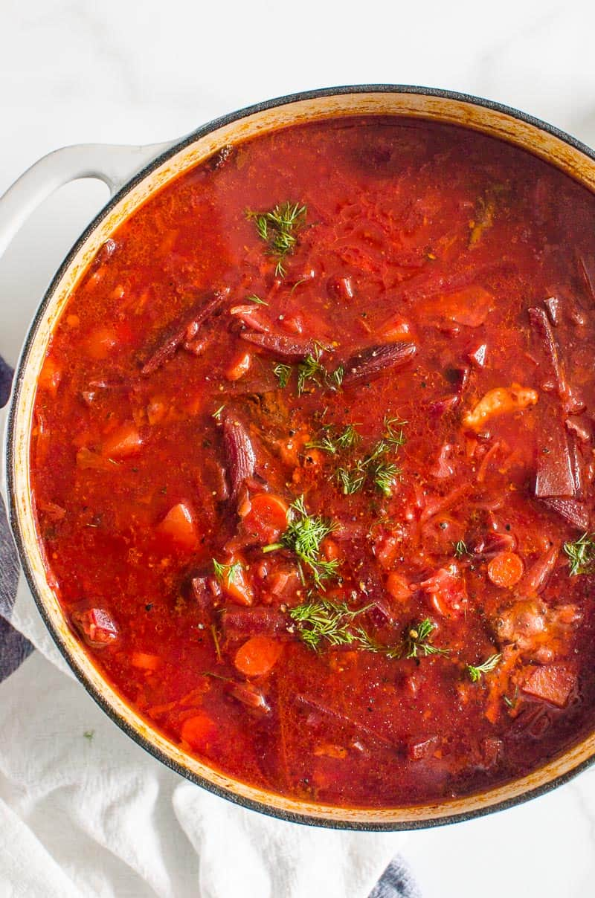

Ukrainian Borscht

Description
If you don’t know what is borscht, it is deep red coloured soup with cabbage, beets, potatoes, carrots, onion and garlic, and possibly beef and beans. Then served with sour cream and dill. Essentially, this beet borscht recipe is a superfood and a meal in itself. “Borscht”, “borsch”, “borsh” or “борщ” is a true classic soup every Ukrainian or Russian grew up eating almost weekly. It can be vegan, vegetarian; with beef, pork or even chicken. It truly depends what’s in your fridge that day. That’s how beet borscht soup came about – out of necessity and hunger.
Borscht soup tastes sweet and tangy. Earthy flavors of beets truly shine through in this soup. So this borscht recipe definitely tastes like beets. Because we add vinegar, you want it to taste slightly vinegary and sweet with a pinch of sugar and natural sweetness of veggies.
Ingredients
- 12 cups beef or vegetable broth or stock low sodium
- 5 cups green or red caggabe thinly sliced
- 1 large onion chopped
- 3 medium carrots chopped
- 2 tbsp olive oil
- 3 large beets peeled and cut into matchsticks
- 4 large potatoes peeled and cubed
- 6 oz can tomato paste low sodium
- 2 tsp salt
- 3 bay leaves
- 1 tbsp white vinegar
- Pinch of sugar or maple syrup
- 3 large garlic cloves grated
- Ground black pepper to taste
- 1/4 cup dill finely chopped
- Sour cream and rye bread for serving
Steps
- In a large pot (I use 6 quart Dutch oven), add broth, bay leaves and bring to a boil. In the meanwhile, wash, peel and cut vegetables.
- Once broth is boiling, add cabbage, cover and bring to a boil. Then reduce heat to low and cook for 20 minutes.
- In the meanwhile, preheat large skillet on medium heat and swirl 1 tbsp of oil to coat. Add onion, carrots and saute for 5 minutes, stirring occasionally.
- Add beets, remaining 1 tbsp of oil and cook for another 3-4 minutes.
- Transfer sauteed veggies to a pot along with potatoes, tomato paste and salt. Cover, bring to a boil and cook on low heat for 20 minutes.
- Turn off heat. Add vinegar, sugar, garlic and pepper. Stir and let borscht sit for 10 minutes to allow flavours to marry each other. Add dill, stir and adjust any seasonings to taste.
- Serve hot with a dollop of sour cream, bread and garlic clove on the side (this is not for everyone).